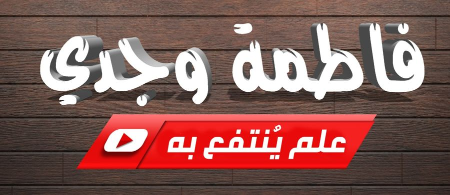

خبرة ١٣ عامًا في تدريس القرآن الكريم: تعليمًا وإقراءً وتدريبًا
طرق التدريس والتعلم النشط داخل الحلقات
خمسة عشر بابًا، من داخل الحلقة إلى تدريب المعلمات.
الطرق التي حفظتِها بالقلب ♥ تبقى هنا على جهازكِ.
معلمة ومقرئة ومدربة لمعلمات القرآن، بخبرة ثلاثة عشر عامًا في تدريس القرآن الكريم، منها سنوات طويلة معلمةً لفصول الحافظات في دار المبرة بجدة. تدرّس الآن فصلًا للقرآن لغير العربيات، وفصلًا لمراجعة القرآن. تجمع بين الإقراء المسند بالإجازات، وتصميم الحلقة المتجددة، وتدريب المعلمات على التعلم النشط وصناعة الوسيلة.
نحو حلقة قرآنية متجددة، مع أكثر من خمسين طريقة للتسميع والمراجعة في ثلاثة أنواع: طرق مألوفة، وطرق مرتبطة بالمعاني، وطرق التعلم النشط. ومعها ضبط الفصل، والعلاقات، وتصميم الوسيلة، والتقييم والتعزيز.
ردمك 978-977-730-221-0 · رقم الإيداع 2023/11690
ما في هذا الموقع خلاصة خبرتي الشخصية في التدريس: طرق طبّقتُها في حلقاتي، وأفكار فكّرتُ فيها ولم أطبّقها بعد (وعليها وسم «فكرة مقترحة»). أعرضها لمن تحب أن تجرّب أو تعدّل أو تستلهم، ولا أعمّمها على كل حلقة؛ فلكل حلقة طالباتها وظروفها، وما نجح عندي قد يحتاج تعديلًا عندكِ، وقد لا يناسبكِ أصلًا، ولا بأس في ذلك. لا أُلزم أحدًا بشيء؛ إنما أعرض تجربتي.
الطرق والأفكار والنصوص والرسوم في هذا الموقع من عملي وتجربتي. يسعدني أن تطبّقيها في حلقتكِ وتعدّلي فيها كما تشائين. أما نقلها أو نشرها أو تقديمها في دورة أو كتاب أو محتوى، فأرجو أن يكون بذكر المصدر: «فاطمة وجدي · حلقة جديدة» newhalaqah.com، ولا تُباع ولا تُنسب لغير صاحبتها. والكلمة أمانة، والله شهيد.
A Quran teacher, reciter (muqri'ah) and trainer of Quran teachers, with thirteen years of experience teaching the Noble Quran, including many years teaching classes of hafidhat at Dar Al-Mabarrah in Jeddah. She currently teaches a Quran class for non-Arabic speakers and a Quran revision class. Her work brings together iqra' with connected ijazahs, designing a renewed halaqah, and training teachers in active learning and making teaching aids.
Towards a renewed Quran halaqah: more than fifty methods of recitation and revision in three kinds — familiar methods, meaning-based methods, and active-learning methods — along with class management, relationships, designing teaching aids, assessment and encouragement. (In Arabic.)
ISBN 978-977-730-221-0 · Legal deposit 2023/11690
This site holds the fruit of my personal teaching experience: methods I have applied in my halaqahs, and ideas I have thought through but not applied yet (marked «Suggested idea»). I share them for anyone who would like to try, adapt or be inspired — I do not claim they fit every halaqah. Every halaqah has its own students and circumstances; what worked for me may need adjusting for you, or may not suit you at all, and that is fine. I impose nothing on anyone; I simply share my experience.
The methods, ideas, texts and illustrations on this site are my own work and experience. You are welcome to use them in your halaqah and adapt them as you like. If you share, publish, or present them in a course, book or other content, please credit the source: «Fatma Wagdy · New Halaqah · newhalaqah.com». Please do not sell them or attribute them to anyone else. Words are a trust, and Allah is the witness.